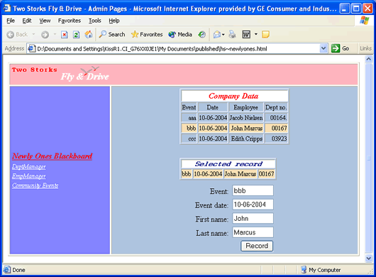
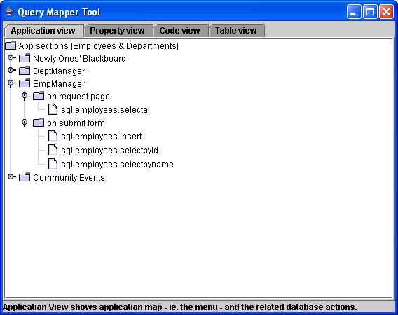
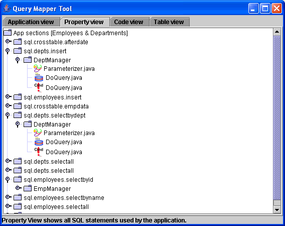
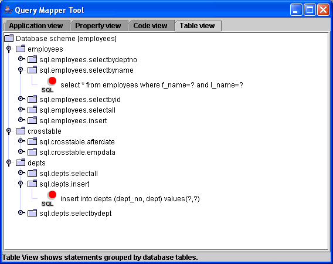

|
Как веб-программист, я часто сталкивался с тем, что ресурсы проекта превращаются в настоящий хаос, управлять которым невозможно. В итоге я решил создать небольшую удобную программу, которая выполняла бы поиск по исходным файлам и привязывала бы их к соответствующим ресурсам. Разработка надежного приложения на основе базы данных кажется удачным способом для сохранения операторов базы данных в одном файле свойств в форме ключ = пары значений, например sql.t_machine.insert=insert into t_machine (id, mcname, headnum) values (?,?,?)Для использования этой формы достаточно преобразовать файл свойств в код Java, после чего можно легко создать экземпляр объекта PreparedStatement и выполнить необходимые настройки значений, полученных из формы HTML. Properties props = new Properties(); Однако, что делать, если в файле свойств содержатся сотни операторов, и некоторые из них превращаются в более чем один класс Java? Если что-либо в проекте изменено любым из его участников (например, счетчик параметров или порядок для запроса SQL), необходимы данные обо ВСЕХ соответствующих классах Java, JSP и страницах HTML, связанных с этим оператором, дл применения изменений. Все знают программистов баз данных и их потребности в изменении таблиц и запросов - не реже, чем разработчики Java пьют кофе! При этом нельзя забывать о постоянно меняющихся требованиях заказчиков. Поэтому ни один файл свойств не может быть статичным. По мере изменения операторов SQL должен изменяться и код! Вскоре потребуется выполнить поиск по каждому из выражений из файла свойств и классов Java для их обработки и настройки. Именно для этого и нужно интеллектуальное и удобное средство создания отображений запросов. Рассмотрим его подробнее! Используем в качестве примера небольшой пример приложения с несколькими JSP, обеспечивающими для пользователя формы для отправки, вставки, обновления и выбора операторов в базе данных. Когда пользователь запрашивает страницу, как правило, щелкая ссылку, значок, элемент меню и т.д., в фоновом режиме могут происходить многие процессы. Например, оператор выбора базы данных, который создает список или таблицу на следующем экране. Когда пользователь завершает работу на странице, обычно введя данные в элементах формы, нажмите кнопку "Отправить". На веб-сервер будет отправлен новый запрос. Опять же, в одном из классов Java могут происходить операции с базой данных. Вот один из примеров неудачного действия в графическом веб-интерфейса:  Пользователь щелкнул элемент меню "Newly Ones' Blackboard" слева (выделено красным), и справа появилась страница ответов. Верхняя таблица и данные в рамке справа были получены в результате операции с базой данных. Теперь пользователь может выбрать одну запись из списка для перезаписи данных. Затем он нажимает кнопку "Записать" для сохранения данных в базу. |
Средствосоздания отображений запросов содержит четыре представления в JFrame, содержащие JTabbedPaneс одной вкладкой для каждого ракурса. Это следующие вкладки:
 Вкладка Вид приложения может содержать определенную логическую последовательность приложения. В данном случае выбрана иерархия меню, однако это остается на усмотрение программиста. Если требуется найти что-либо на основе карты меню приложения или функцию, рекомендуется использовать именно эту вкладку. Узел первого уровня виде приложения соответствует представленной ранее структуре меню приложения "Два аиста". При щелчке на узле отображаются два типа подузлов: на страница запроса и в форме отправки. С их помощью можно разделить операторы SQL на две группы: выполняемые до визуализации, результат которых отображается на следующей странице, и выполняемые после отправки формы. Листья на дереве - это строки свойств SQL из файла свойств. Разработчик в целом получает представление о том, какая часть данного оператора вызывается и какое действие пользователя (запрос страницы или отправка формы) приведет к выполнению запроса. На вкладке Вид свойства отображаются ключи операторов SQL из файла свойств, также используемые в коде Java.  При развертывании узлов отображаются соответствующие логические записи (имена в строке меню, которых пользователь щелкает для запуска функции). На нижнем уровне существует 3 типа исходных файлов, привязанных к данному выражению. Это следующие типы:
В моей терминологии метод получения - это файл Java Или JSP, обрабатывающий значения, полученные из пользовательской формы, из источника данных. Методы получения могут выполнять проверку, но они всегда выполняют замещение знаков вопроса PreparedStatement данным пользователя. Наконец, обработчики - это классы Java и даже страницы JSP, обрабатывающие текущий оператор - они содержат вызовы метода executeQuery(), executeUpdate(), executeBatch() и т.д.. На вкладке "Вид кода" отображается полный список файлов приложения, сгруппированных по типам. Под каждым именем файла отображаются раскрывающиеся узлы с соответствующими операторами.
При открытии вкладки "Вид приложения" и последующем щелчке по элементу меню можно выбрать связанный с меню оператор SQL, а затем перейти на вкладку "Вид свойства". В результате выбранный оператор будет выделен на экране. Перейдите к вложенным элементам, выберите файл ресурсов, щелкните его и измените на "Вид кода". На вкладке "Вид кода" будет отображаться выбранный ресурс и все операторы, влияющие на него. При переходу от вида к виду можно фильтровать интересующую информацию или анализировать структуры проектов с точки зрения разработчика.  Все это было бы бесполезно, если бы не было возможности проверить, что представляет собой реальный оператор SQL с точки зрения ключей файлов свойств. Для этого и нужна вкладка Вид таблицы. На вкладке "Вид таблицы" отображаются все операторы SQL выражения, сгруппированные по именам таблиц. Безусловно, здесь также приводятся первичные ссылки на ключи свойств, но при щелчке по ним отображается действительный оператор. Далее будет описан реальный процесс разработки приложения с использованием NetBeans 4.0. |
|
Будут рассмотрены следующие вопросы:
Настройка нового приложения с помощью среды IDE NetBeans 4.0
Если интерфейс API JDOM загружен, информация о нем должна поступить в NetBeans, так как он потребуется в проекте. Щелкните вкладку "Проект" в среде (или нажмите CTRL+1, если эта вкладка скрыта); правой кнопкой мыши щелкните имя проекта и выберите "Свойства". В разделе "Сборка" выберите "Компиляция исходных кодов". Нажмите кнопку "Добавить архив JAR/папку". Теперь требуется показать папку, в которой установлен JDOM. В каталоге установки JDOM в подпапке "Сборка" откройте файл jdom.jar. Эти шаги следует выполнять всегда, когда требуется добавить внешний или собственный файл .jar в ресурсы проекта. Создание файлов XML и файлов свойств для проекта
Компиляция и выполнение проекта
Выполнение проекта с использованием аргументов командной строки
|
|
Надеюсь, вам удалось успешно построить средство создания отображений запросов с самых первых шагов. Автор предпринял попытку написать полноценный код, поэтому данное руководство не задумывалось как подробное. В нем можно ознакомиться со всеми рекомендациями и при необходимости разработать собственную версию средства с использованием файлов свойств и XML. Поскольку любой разработчик всегда может создать более удачное приложение, целью автора было лишь предложить идею. Ее возможности действительно безграничны. Например, при небольшой доработке это средство можно объединить с редактором, из которого пользователь сможет напрямую открывать файлы для редактирования. В любом случае проблема, для решения которой было разработано описанное здесь средство, существует. Возможно, стоит сосредоточить ресурсы на разработке надежного и удобного инструмента для ее решения. Или оно даже сможет стать компонентом NetBeans? |